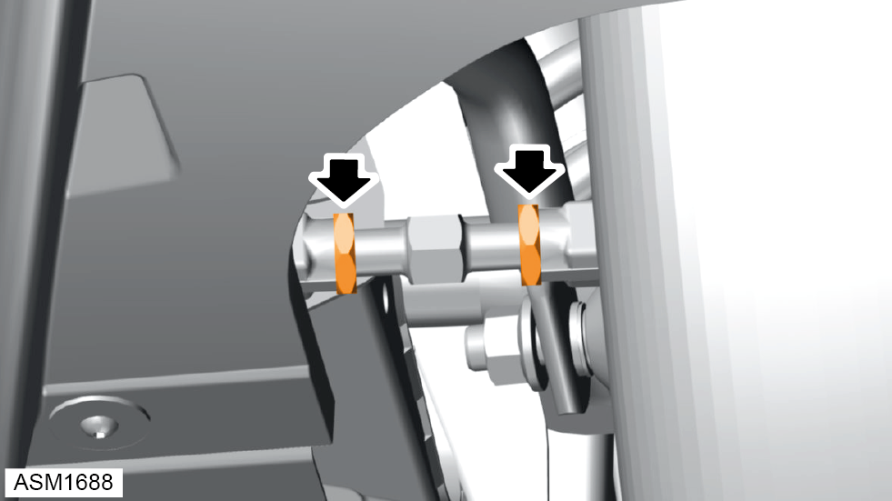
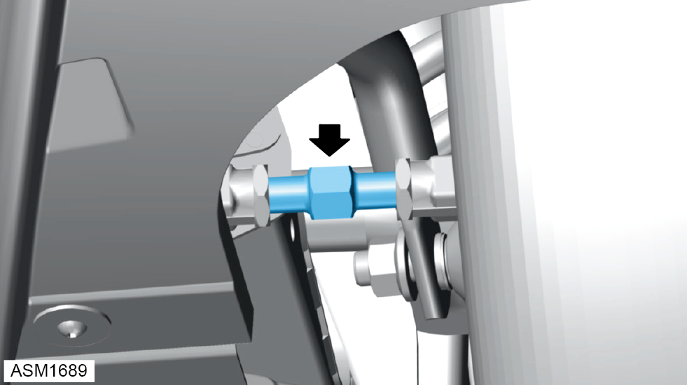

Check And Adjust Rear Suspension Geometry
Print
Operation Code: 31.03.28-00
Important Information
NOTE: Adjusting camber can have an effect on wheel alignment, therefore camber and wheel alignment should be checked and adjusted together.
Camber Adjustment
- Refer to technical data for wheel alignment specifications and pre adjustment vehicle conditioning.
NOTE: Make sure steering wheel is in straight ahead position before performing any adjustment.
- Raise vehicle on 4 post ramp.
- Loosen M12 nut securing rear of lower wishbone to vehicle.
- Adjust cambolt until camber value is within tolerance.
- Repeat procedure for opposite side of vehicle suspension.
- Tighten M12 nuts (x2) securing lower wishbone to rear subframe both left and right side of vehicle. Torque 105 Nm.
NOTE: Only tighten nuts at standard ride height.
Wheel Alignment
- Hold toe arm assembly using flats (x2) machined into toe arm assembly.
 CAUTION: When slackening or tightening the toe arm assembly locknuts, it is important that the torque reaction is resisted using the toe arm assembly flats and that the ball joint itself is not allowed to be stressed.
CAUTION: When slackening or tightening the toe arm assembly locknuts, it is important that the torque reaction is resisted using the toe arm assembly flats and that the ball joint itself is not allowed to be stressed.

- Loosen nuts (x2) on toe arm assembly.

- Adjust toe arm assembly with flats on adjusters (x2) until wheel alignment value is within tolerance.
- Tighten nuts (x2) on toe arm assembly. Torque 45 Nm.
- Repeat procedure for opposite side of vehicle suspension.